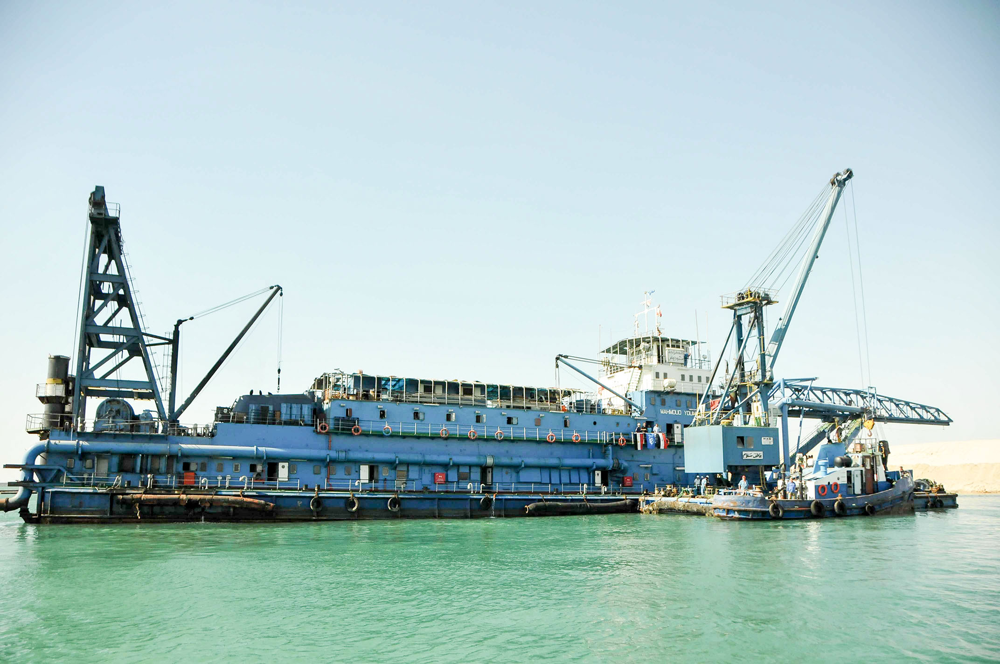

Definition of the Suez Canal
The new Suez Canal is a project for the development and expansion of the Suez Canal, which is a branch of length 35 How long does it run parallel to the original Suez Canal? Its length is 190 km, and it works as a double navigation lane to avoid stopping convoys Giant in the submersible in the Bitter Lakes. The project was opened on August 6, 2015

Build date
On August 5, 2014, President Abdel Fattah . announced Al-Sisi announced the actual start of the construction of a new waterway for the Suez Canal and the deepening and development of the current waterway The entire Suez Canal axis, with the aim of maximizing the role of the Suez Canal region as a logistical, industrial, commercial and tourist center. The region includes three provinces: Port Said, Suez and Ismailia.

On August 15, 2014, Prime Minister Ibrahim Mahlab stated that it was decided to issue investment certificates in the name of the Suez Canal Investment Certificate, with the aim of raising 60 billion Egyptian pounds To finance the Suez Canal axis project through the Egyptians only. The certificates are to be issued from the national banks At an annual interest rate of 12%, paid every three months, provided that the principal amount is recovered after five years.[11][12][13] at 19 August 2014 Lieutenant-General Mohab Mameesh, President of the Suez Canal Authority, announced the winning coalition for implementing a development project The Suez Canal, which is the alliance of Dar Al-Handasah.[14] On September 15, 2014, the Governor of the Central Bank of Egypt announced, The proceeds of selling the Suez Canal investment certificates amounted to about 61 billion Egyptian pounds, since the beginning of the offering through Banks on September 04, 2014, the amount required to dig the new canal, and it was decided Closure of subscription to certificates in banks.

Start of Construction
Drilling and Construction
Dry drilling
The dry drilling phase of the project started on August 7, 2014, 44,000 Egyptian citizens participated in it, accompanied by 4,500 equipment, a total of 84 companies, and two battalions of forces were added. armed forces to clear mines and remnants of war, in addition to two methods battalions to assist in excavation operations. And they were able to finish dry drilling 100% within 9 months, by extracting about 250 million cubic meters of sand,

Water Drilling
The dredging phase started after The end of dry drilling directly, to reach the required depth, and 2,000 workers from the Canal Authority participated in this stage Suez, 3000 workers from the Challenge Alliance, 750 workers from the Hope Alliance, using a total of 45 dredgers, adding To 4 floating hotels since the beginning of the project to rest workers and rotate shifts. The dredging work has been completed water by raising 258.8 million cubic meters of water-saturated sand

Construction
120 beets were installed along the duct The navigation of the new canal is equipped with solar energy lighting and is linked to an electronic system via a computer It achieves connectivity and communication between transiting ships and transit centers 